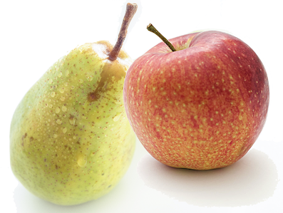

LeNet
- use convolution to extract spatial features.
- subsample using spatial average of maps.
- non-linearity in the form of tanh or sigmoids.
- multi-layer neural network(MLP) as final classifier
- sparse connection matrix between layers to avoid large computational cost
AlexNet
- use of rectified linear units(ReLU) as non-linearities.
- use of dropout technique to selectively ignore single neurons during training , a way to avoid overfitting of the model.
- overlapping max pooling, avoiding the averaging effects of average pooling.
- using GPUs to reduce training time
xception
Computing the mean and std of dataset
import tensorflow as tf
from PIL import ImageStat
class Stats(ImageStat.Stat):
def __add__(self, other):
return Stats(list(map(add, self.h, other.h)))
loader = DataLoader(dataset, batch_size=10, num_workers=5)
statistics = None
for data in loader:
for b in range(data.shape[0]):
if statistics is None:
statistics = Stats(tf.to_pil_image(data[b]))
else:
statistics += Stats(tf.to_pil_image(data[b]))
print(f'mean:{statistics.mean}, std:{statistics.stddev}')
pyx to so
python setup.py build_ext --inplace
彻底删除cuda
sudo apt-get purge nvidia*
sudo apt-get autoremove
sudo apt-get autoclean
sudo rm -rf /usr/local/cuda*
Steps to Install PyTorch With CUDA 10.0
conda install pytorch torchvision cudatoolkit=10.0 -c pytorch\
pip install torchsummary
conda install matplotlib
conda install -c conda-forge matplotlib
conda install tensorflow object_detection api
conda install -c conda-forge tf_object_detection
ModuleNotFoundError: No module named 'deployment'
from slim.deployment import model_deploy
ModuleNotFoundError: No module named 'slim'
conda install -c conda-forge tf-slim
ModuleNotFoundError: No module named 'nets'
change frome nets to from slim.nets
creating trainval.txt
import os
import random
import sys
if len(sys.argv) < 2:
print("no directory specified, please input target directory")
exit()
root_path = sys.argv[1]
xmlfilepath = root_path + '/Annotations'
txtsavepath = root_path + '/ImageSets/Main'
if not os.path.exists(root_path):
print("cannot find such directory: " + root_path)
exit()
if not os.path.exists(txtsavepath):
os.makedirs(txtsavepath)
trainval_percent = 0.9
train_percent = 0.8
total_xml = os.listdir(xmlfilepath)
num = len(total_xml)
list = range(num)
tv = int(num * trainval_percent)
tr = int(tv * train_percent)
trainval = random.sample(list, tv)
train = random.sample(trainval, tr)
print("train and val size:", tv)
print("train size:", tr)
ftrainval = open(txtsavepath + '/trainval.txt', 'w')
ftest = open(txtsavepath + '/test.txt', 'w')
ftrain = open(txtsavepath + '/train.txt', 'w')
fval = open(txtsavepath + '/val.txt', 'w')
for i in list:
name = total_xml[i][:-4] + '\n'
if i in trainval:
ftrainval.write(name)
if i in train:
ftrain.write(name)
else:
fval.write(name)
else:
ftest.write(name)
ftrainval.close()
ftrain.close()
fval.close()
ftest.close()
creating TFR datasets
import hashlib
import io
import logging
import os
import random
import re
from lxml import etree
import PIL.Image
import tensorflow as tf
from object_detection.utils import dataset_util
from object_detection.utils import label_map_util
flags = tf.app.flags
flags.DEFINE_string('data_dir', '', 'Root directory to raw pet dataset.')
flags.DEFINE_string('output_dir', '', 'Path to directory to output TFRecords.')
flags.DEFINE_string('label_map_path', 'data/pet_label_map.pbtxt',
'Path to label map proto')
FLAGS = flags.FLAGS
def get_class_name_from_filename(file_name):
"""Gets the class name from a file.
Args:
file_name: The file name to get the class name from.
ie. "american_pit_bull_terrier_105.jpg"
Returns:
A string of the class name.
"""
print(file_name)
match = re.match(r'([A-Za-z_]+)(_[0-9]+\.jpg)', file_name, re.I)
return match.groups()[0]
def dict_to_tf_example(data,
label_map_dict,
image_subdirectory,
ignore_difficult_instances=False):
"""Convert XML derived dict to tf.Example proto.
Notice that this function normalizes the bounding box coordinates provided
by the raw data.
Args:
data: dict holding PASCAL XML fields for a single image (obtained by
running dataset_util.recursive_parse_xml_to_dict)
label_map_dict: A map from string label names to integers ids.
image_subdirectory: String specifying subdirectory within the
Pascal dataset directory holding the actual image data.
ignore_difficult_instances: Whether to skip difficult instances in the
dataset (default: False).
Returns:
example: The converted tf.Example.
Raises:
ValueError: if the image pointed to by data['filename'] is not a valid JPEG
"""
img_path = os.path.join(image_subdirectory, data['filename'])
with tf.gfile.GFile(img_path, 'rb') as fid:
encoded_jpg = fid.read()
encoded_jpg_io = io.BytesIO(encoded_jpg)
image = PIL.Image.open(encoded_jpg_io)
if image.format != 'JPEG':
raise ValueError('Image format not JPEG')
key = hashlib.sha256(encoded_jpg).hexdigest()
width = int(data['size']['width'])
height = int(data['size']['height'])
xmin = []
ymin = []
xmax = []
ymax = []
classes = []
classes_text = []
truncated = []
poses = []
difficult_obj = []
for obj in data['object']:
difficult = bool(int(obj['difficult']))
if ignore_difficult_instances and difficult:
continue
difficult_obj.append(int(difficult))
xmin.append(float(obj['bndbox']['xmin']) / width)
ymin.append(float(obj['bndbox']['ymin']) / height)
xmax.append(float(obj['bndbox']['xmax']) / width)
ymax.append(float(obj['bndbox']['ymax']) / height)
class_name = get_class_name_from_filename(data['filename'])
classes_text.append(class_name.encode('utf8'))
classes.append(label_map_dict[class_name])
truncated.append(int(obj['truncated']))
poses.append(obj['pose'].encode('utf8'))
example = tf.train.Example(features=tf.train.Features(feature={
'image/height': dataset_util.int64_feature(height),
'image/width': dataset_util.int64_feature(width),
'image/filename': dataset_util.bytes_feature(
data['filename'].encode('utf8')),
'image/source_id': dataset_util.bytes_feature(
data['filename'].encode('utf8')),
'image/key/sha256': dataset_util.bytes_feature(key.encode('utf8')),
'image/encoded': dataset_util.bytes_feature(encoded_jpg),
'image/format': dataset_util.bytes_feature('jpeg'.encode('utf8')),
'image/object/bbox/xmin': dataset_util.float_list_feature(xmin),
'image/object/bbox/xmax': dataset_util.float_list_feature(xmax),
'image/object/bbox/ymin': dataset_util.float_list_feature(ymin),
'image/object/bbox/ymax': dataset_util.float_list_feature(ymax),
'image/object/class/text': dataset_util.bytes_list_feature(classes_text),
'image/object/class/label': dataset_util.int64_list_feature(classes),
'image/object/difficult': dataset_util.int64_list_feature(difficult_obj),
'image/object/truncated': dataset_util.int64_list_feature(truncated),
'image/object/view': dataset_util.bytes_list_feature(poses),
}))
return example
def create_tf_record(output_filename,
label_map_dict,
annotations_dir,
image_dir,
examples):
"""Creates a TFRecord file from examples.
Args:
output_filename: Path to where output file is saved.
label_map_dict: The label map dictionary.
annotations_dir: Directory where annotation files are stored.
image_dir: Directory where image files are stored.
examples: Examples to parse and save to tf record.
"""
writer = tf.python_io.TFRecordWriter(output_filename)
for idx, example in enumerate(examples):
if idx % 100 == 0:
logging.info('On image %d of %d', idx, len(examples))
# path = os.path.join(annotations_dir, 'xmls', example + '.xml')
path = os.path.join(annotations_dir, example + '.xml')
if not os.path.exists(path):
logging.warning('Could not find %s, ignoring example.', path)
continue
with tf.gfile.GFile(path, 'r') as fid:
xml_str = fid.read()
xml = etree.fromstring(xml_str)
data = dataset_util.recursive_parse_xml_to_dict(xml)['annotation']
tf_example = dict_to_tf_example(data, label_map_dict, image_dir)
writer.write(tf_example.SerializeToString())
writer.close()
# TODO: Add test for pet/PASCAL main files.
def main(_):
data_dir = FLAGS.data_dir
label_map_dict = label_map_util.get_label_map_dict(FLAGS.label_map_path)
logging.info('Reading from Pet dataset.')
image_dir = os.path.join(data_dir, 'images')
annotations_dir = os.path.join(data_dir, 'annotations')
examples_path = os.path.join(annotations_dir, 'trainval.txt')
examples_list = dataset_util.read_examples_list(examples_path)
# Test images are not included in the downloaded data set, so we shall perform
# our own split.
random.seed(42)
random.shuffle(examples_list)
num_examples = len(examples_list)
num_train = int(0.7 * num_examples)
train_examples = examples_list[:num_train]
val_examples = examples_list[num_train:]
logging.info('%d training and %d validation examples.',
len(train_examples), len(val_examples))
train_output_path = os.path.join(FLAGS.output_dir, 'pet_train.record')
val_output_path = os.path.join(FLAGS.output_dir, 'pet_val.record')
create_tf_record(train_output_path, label_map_dict, annotations_dir,
image_dir, train_examples)
create_tf_record(val_output_path, label_map_dict, annotations_dir,
image_dir, val_examples)
if __name__ == '__main__':
tf.app.run()
python object_detection/dataset_tools/create_pet_tf_record.py \
--label_map_path=object_detection/data/pet_label_map.pbtxt \
--data_dir=`pwd` \
--output_dir=`pwd`
create model config file
# Faster R-CNN with Resnet-101 (v1), configuration for MSCOCO Dataset.
# Users should configure the fine_tune_checkpoint field in the train config as
# well as the label_map_path and input_path fields in the train_input_reader and
# eval_input_reader. Search for "PATH_TO_BE_CONFIGURED" to find the fields that
# should be configured.
model {
faster_rcnn {
num_classes: 90
image_resizer {
keep_aspect_ratio_resizer {
min_dimension: 600
max_dimension: 1024
}
}
feature_extractor {
type: 'faster_rcnn_resnet101'
first_stage_features_stride: 16
}
first_stage_anchor_generator {
grid_anchor_generator {
scales: [0.25, 0.5, 1.0, 2.0]
aspect_ratios: [0.5, 1.0, 2.0]
height_stride: 16
width_stride: 16
}
}
first_stage_box_predictor_conv_hyperparams {
op: CONV
regularizer {
l2_regularizer {
weight: 0.0
}
}
initializer {
truncated_normal_initializer {
stddev: 0.01
}
}
}
first_stage_nms_score_threshold: 0.0
first_stage_nms_iou_threshold: 0.7
first_stage_max_proposals: 300
first_stage_localization_loss_weight: 2.0
first_stage_objectness_loss_weight: 1.0
initial_crop_size: 14
maxpool_kernel_size: 2
maxpool_stride: 2
second_stage_box_predictor {
mask_rcnn_box_predictor {
use_dropout: false
dropout_keep_probability: 1.0
fc_hyperparams {
op: FC
regularizer {
l2_regularizer {
weight: 0.0
}
}
initializer {
variance_scaling_initializer {
factor: 1.0
uniform: true
mode: FAN_AVG
}
}
}
}
}
second_stage_post_processing {
batch_non_max_suppression {
score_threshold: 0.0
iou_threshold: 0.6
max_detections_per_class: 100
max_total_detections: 300
}
score_converter: SOFTMAX
}
second_stage_localization_loss_weight: 2.0
second_stage_classification_loss_weight: 1.0
}
}
train_config: {
batch_size: 1
optimizer {
momentum_optimizer: {
learning_rate: {
manual_step_learning_rate {
initial_learning_rate: 0.0003
schedule {
step: 900000
learning_rate: .00003
}
schedule {
step: 1200000
learning_rate: .000003
}
}
}
momentum_optimizer_value: 0.9
}
use_moving_average: false
}
gradient_clipping_by_norm: 10.0
fine_tune_checkpoint: "PATH_TO_BE_CONFIGURED/model.ckpt"
from_detection_checkpoint: true
data_augmentation_options {
random_horizontal_flip {
}
}
}
train_input_reader: {
tf_record_input_reader {
input_path: "PATH_TO_BE_CONFIGURED/mscoco_train.record-?????-of-00100"
}
label_map_path: "PATH_TO_BE_CONFIGURED/mscoco_label_map.pbtxt"
}
eval_config: {
num_examples: 8000
# Note: The below line limits the evaluation process to 10 evaluations.
# Remove the below line to evaluate indefinitely.
max_evals: 10
}
eval_input_reader: {
tf_record_input_reader {
input_path: "PATH_TO_BE_CONFIGURED/mscoco_val.record-?????-of-00010"
}
label_map_path: "PATH_TO_BE_CONFIGURED/mscoco_label_map.pbtxt"
shuffle: false
num_readers: 1
}
train
python train.py --logtostderr
--train_dir=/home/pmjd/Disk/Deep-Learning-master/tensorflow_toy_detector/train_dir
--pipeline_config_path=/home/pmjd/Disk/Deep-Learning-master/tensorflow_toy_detector/net.config
tensorboard --logdir /home/pmjd/Disk/Deep-Learning-master/tensorflow_toy_detector/train_dir/
evaluator
python new_eval.py --logtostderr
--checkpoint_dir /home/pmjd/Disk/Deep-Learning-master/tensorflow_toy_detector/train_dir
--eval_dir /home/pmjd/Disk/Deep-Learning-master/tensorflow_toy_detector/eval_dir
--pipeline_config_path /home/pmjd/Disk/Deep-Learning-master/tensorflow_toy_detector/net.config
tensorboard --logdir /home/pmjd/Disk/Deep-Learning-master/tensorflow_toy_detector/eval_dir/
# new_eval.py
import functools
import os
import tensorflow.compat.v1 as tf
from tensorflow.python.util.deprecation import deprecated
from object_detection.builders import dataset_builder
from object_detection.builders import graph_rewriter_builder
from object_detection.builders import model_builder
from object_detection.legacy import evaluator
from object_detection.utils import config_util
from object_detection.utils import label_map_util
from tensorflow.compat.v1 import ConfigProto
from tensorflow.compat.v1 import InteractiveSession
import keras.backend as K
config = ConfigProto()
config.gpu_options.allow_growth = True
session = InteractiveSession(config=config)
K.set_session(session)
tf.logging.set_verbosity(tf.logging.INFO)
flags = tf.app.flags
flags.DEFINE_boolean('eval_training_data', False,
'If training data should be evaluated for this job.')
flags.DEFINE_string(
'checkpoint_dir', '',
'Directory containing checkpoints to evaluate, typically '
'set to `train_dir` used in the training job.')
flags.DEFINE_string('eval_dir', '', 'Directory to write eval summaries to.')
flags.DEFINE_string(
'pipeline_config_path', '',
'Path to a pipeline_pb2.TrainEvalPipelineConfig config '
'file. If provided, other configs are ignored')
flags.DEFINE_string('eval_config_path', '',
'Path to an eval_pb2.EvalConfig config file.')
flags.DEFINE_string('input_config_path', '',
'Path to an input_reader_pb2.InputReader config file.')
flags.DEFINE_string('model_config_path', '',
'Path to a model_pb2.DetectionModel config file.')
flags.DEFINE_boolean(
'run_once', False, 'Option to only run a single pass of '
'evaluation. Overrides the `max_evals` parameter in the '
'provided config.')
FLAGS = flags.FLAGS
@deprecated(None, 'Use object_detection/model_main.py.')
def main(unused_argv):
assert FLAGS.checkpoint_dir, '`checkpoint_dir` is missing.'
assert FLAGS.eval_dir, '`eval_dir` is missing.'
tf.gfile.MakeDirs(FLAGS.eval_dir)
if FLAGS.pipeline_config_path:
configs = config_util.get_configs_from_pipeline_file(
FLAGS.pipeline_config_path)
tf.gfile.Copy(
FLAGS.pipeline_config_path,
os.path.join(FLAGS.eval_dir, 'pipeline.config'),
overwrite=True)
else:
configs = config_util.get_configs_from_multiple_files(
model_config_path=FLAGS.model_config_path,
eval_config_path=FLAGS.eval_config_path,
eval_input_config_path=FLAGS.input_config_path)
for name, config in [('model.config', FLAGS.model_config_path),
('eval.config', FLAGS.eval_config_path),
('input.config', FLAGS.input_config_path)]:
tf.gfile.Copy(config, os.path.join(FLAGS.eval_dir, name), overwrite=True)
model_config = configs['model']
eval_config = configs['eval_config']
input_config = configs['eval_input_config']
if FLAGS.eval_training_data:
input_config = configs['train_input_config']
model_fn = functools.partial(
model_builder.build, model_config=model_config, is_training=False)
def get_next(config):
return dataset_builder.make_initializable_iterator(
dataset_builder.build(config)).get_next()
create_input_dict_fn = functools.partial(get_next, input_config)
categories = label_map_util.create_categories_from_labelmap(
input_config.label_map_path)
if FLAGS.run_once:
eval_config.max_evals = 1
graph_rewriter_fn = None
if 'graph_rewriter_config' in configs:
graph_rewriter_fn = graph_rewriter_builder.build(
configs['graph_rewriter_config'], is_training=False)
evaluator.evaluate(
create_input_dict_fn,
model_fn,
eval_config,
categories,
FLAGS.checkpoint_dir,
FLAGS.eval_dir,
graph_hook_fn=graph_rewriter_fn)
if __name__ == '__main__':
tf.app.run()
from object_detection import evaluator
ImportError: cannot import name 'evaluator'\
from object_detection.legacy import evaluator
control trainning steps
num_steps:600
tensorflow freeze
# From tensorflow/models/research/
INPUT_TYPE=image_tensor
PIPELINE_CONFIG_PATH={path to pipeline config file}
TRAINED_CKPT_PREFIX={path to model.ckpt}
EXPORT_DIR={path to folder that will be used for export}
python object_detection/export_inference_graph.py \
--input_type=${INPUT_TYPE} \
--pipeline_config_path=${PIPELINE_CONFIG_PATH} \
--trained_checkpoint_prefix=${TRAINED_CKPT_PREFIX} \
--output_directory=${EXPORT_DIR}
model:save and load
model.fit(x_train, y_train, epochs = 150, batch_size = 32,callbacks=[tensorboard_callback])
model.save('./models/model.h5')
model.save_weights('./models/weights.h5')
model_path = './models/model.h5'
model_weights_path = './models/weights.h5'
model = load_model(model_path)
model.load_weights(model_weights_path)
array = model.predict(point_set)
or
tf.keras.models.save_model(
model,
'models/mymode',
overwrite=True,
include_optimizer=True
)
model = tf.keras.models.load_model('./models/mymode')
cudnn失败
from tensorflow.compat.v1 import ConfigProto
from tensorflow.compat.v1 import InteractiveSession
import keras.backend as K
K.set_image_data_format('channels_last')
K.set_learning_phase(1)
config = ConfigProto()
config.gpu_options.allow_growth = True
session = InteractiveSession(config=config)
K.set_session(session)
pb:save and load
def freeze_session(session, keep_var_names=None, output_names=None, clear_devices=True):
graph = session.graph
with graph.as_default():
freeze_var_names = list(set(v.op.name for v in tf.global_variables()).difference(keep_var_names or []))
output_names = output_names or []
output_names += [v.op.name for v in tf.global_variables()]
input_graph_def = graph.as_graph_def()
if clear_devices:
for node in input_graph_def.node:
node.device = ''
frozen_graph = tf.graph_util.convert_variables_to_constants(
session, input_graph_def, output_names, freeze_var_names)
return frozen_graph
frozen_graph = freeze_session(K.get_session(), output_names=[out.op.name for out in model.outputs])
tf.io.write_graph(frozen_graph, './models', 'xor.pbtxt', as_text=True)
tf.io.write_graph(frozen_graph, './models', 'xor.pb', as_text=False)
detection_graph = tf.Graph()
with detection_graph.as_default():
od_graph_def = tf.GraphDef()
with tf.gfile.GFile('xor.pb', 'rb') as fid:
serialized_graph = fid.read()
od_graph_def.ParseFromString(serialized_graph)
tf.import_graph_def(od_graph_def, name='')
input = tf.get_default_graph().get_tensor_by_name('input_1:0')
output = tf.get_default_graph().get_tensor_by_name('fc2/Softmax:0')
with detection_graph.as_default():
with tf.Session() as sess:
values =sess.run(output, feed_dict={input: point_set})
print(values)
查看模型的输入层和输出层
print('model.inputs :',model.inputs)
print('model.outputs : ',model.outputs)
output
model.inputs : [<tf.Tensor 'input_1:0' shape=(?, 2600, 3) dtype=float32>]
model.outputs : [<tf.Tensor 'fc2/Softmax:0' shape=(?, 2) dtype=float32>]
所以输入层是input_1:0输出层是fc2/Softmax:0
安装ｔｅｎｓｏｒRT
- 下载与您使用的Ubuntu版本和CPU架构匹配的TensorRT本地repo文件。
- 从Debian本地repo软件包安装TensorRT。
os="ubuntu1x04" tag="cudax.x-trt7.x.x.x-ga-yyyymmdd" sudo dpkg -i nv-tensorrt-repo-${os}-${tag}_1-1_amd64.deb sudo apt-key add /var/nv-tensorrt-repo-${tag}/7fa2af80.pub sudo apt-get update sudo apt-get install tensorrt - 如果使用Python 2.7：\
sudo apt-get install python-libnvinfer-dev\ 将安装以下附加软件包：\python-libnvinfer\ 如果使用Python 3.x：\sudo apt-get install python3-libnvinfer-dev\ 将安装以下附加软件包：\python3-libnvinfer\ 如果您打算将TensorRT与TensorFlow结合使用：\sudo apt-get install uff-converter-tf\ 如果您要运行需要ONNX的示例 图形外科医生 或将Python模块用于您自己的项目，运行：\sudo apt-get install onnx-graphsurgeon\
anaconda tensorRT
- 下载tar文件
TensorRT-7.0.0.11.Ubuntu-18.04.x86_64-gnu.cuda-10.0.cudnn7.6.tar.gz
(wind1) star@xmatrix:~$
(wind1) star@xmatrix:~$
(wind1) star@xmatrix:~$ cd TensorRT
(wind1) star@xmatrix:~/TensorRT$
(wind1) star@xmatrix:~/TensorRT$
(wind1) star@xmatrix:~/TensorRT$
(wind1) star@xmatrix:~/TensorRT$ ls
TensorRT TensorRT_1 TensorRT-7.0.0.11 TensorRT-7.0.0.11.Ubuntu-16.04.x86_64-gnu.cuda-10.0.cudnn7.6.tar.gz TensorRT-7.0.0(1).tar.gz
(wind1) star@xmatrix:~/TensorRT$
(wind1) star@xmatrix:~/TensorRT$
(wind1) star@xmatrix:~/TensorRT$
(wind1) star@xmatrix:~/TensorRT$
(wind1) star@xmatrix:~/TensorRT$
(wind1) star@xmatrix:~/TensorRT$ cd TensorRT-7.0.0.11
(wind1) star@xmatrix:~/TensorRT/TensorRT-7.0.0.11$
(wind1) star@xmatrix:~/TensorRT/TensorRT-7.0.0.11$ ls
bin data doc graphsurgeon include lib python samples targets TensorRT-Release-Notes.pdf uff
(wind1) star@xmatrix:~/TensorRT/TensorRT-7.0.0.11$
(wind1) star@xmatrix:~/TensorRT/TensorRT-7.0.0.11$
(wind1) star@xmatrix:~/TensorRT/TensorRT-7.0.0.11$
(wind1) star@xmatrix:~/TensorRT/TensorRT-7.0.0.11$
(wind1) star@xmatrix:~/TensorRT/TensorRT-7.0.0.11$
(wind1) star@xmatrix:~/TensorRT/TensorRT-7.0.0.11$
(wind1) star@xmatrix:~/TensorRT/TensorRT-7.0.0.11$
(wind1) star@xmatrix:~/TensorRT/TensorRT-7.0.0.11$
(wind1) star@xmatrix:~/TensorRT/TensorRT-7.0.0.11$ cd python
(wind1) star@xmatrix:~/TensorRT/TensorRT-7.0.0.11/python$
(wind1) star@xmatrix:~/TensorRT/TensorRT-7.0.0.11/python$
(wind1) star@xmatrix:~/TensorRT/TensorRT-7.0.0.11/python$
(wind1) star@xmatrix:~/TensorRT/TensorRT-7.0.0.11/python$ ls
tensorrt-7.0.0.11-cp27-none-linux_x86_64.whl tensorrt-7.0.0.11-cp35-none-linux_x86_64.whl tensorrt-7.0.0.11-cp37-none-linux_x86_64.whl
tensorrt-7.0.0.11-cp34-none-linux_x86_64.whl tensorrt-7.0.0.11-cp36-none-linux_x86_64.whl
(wind1) star@xmatrix:~/TensorRT/TensorRT-7.0.0.11/python$
(wind1) star@xmatrix:~/TensorRT/TensorRT-7.0.0.11/python$
(wind1) star@xmatrix:~/TensorRT/TensorRT-7.0.0.11/python$
(wind1) star@xmatrix:~/TensorRT/TensorRT-7.0.0.11/python$
(wind1) star@xmatrix:~/TensorRT/TensorRT-7.0.0.11/python$
(wind1) star@xmatrix:~/TensorRT/TensorRT-7.0.0.11/python$ pip --version
pip 19.3.1 from /home/star/anaconda3/envs/wind1/lib/python3.6/site-packages/pip (python 3.6)
(wind1) star@xmatrix:~/TensorRT/TensorRT-7.0.0.11/python$
(wind1) star@xmatrix:~/TensorRT/TensorRT-7.0.0.11/python$
(wind1) star@xmatrix:~/TensorRT/TensorRT-7.0.0.11/python$
(wind1) star@xmatrix:~/TensorRT/TensorRT-7.0.0.11/python$ pip3 --version
pip 19.3.1 from /usr/local/lib/python3.5/dist-packages/pip (python 3.5)
(wind1) star@xmatrix:~/TensorRT/TensorRT-7.0.0.11/python$
(wind1) star@xmatrix:~/TensorRT/TensorRT-7.0.0.11/python$
(wind1) star@xmatrix:~/TensorRT/TensorRT-7.0.0.11/python$
(wind1) star@xmatrix:~/TensorRT/TensorRT-7.0.0.11/python$ python -m pip install tensorrt-7.0.0.11-cp36-none-linux_x86_64.whl
Processing ./tensorrt-7.0.0.11-cp36-none-linux_x86_64.whl
Installing collected packages: tensorrt
Successfully installed tensorrt-7.0.0.11
(wind1) star@xmatrix:~/TensorRT/TensorRT-7.0.0.11/python$
(wind1) star@xmatrix:~/TensorRT/TensorRT-7.0.0.11/python$
(wind1) star@xmatrix:~/TensorRT/TensorRT-7.0.0.11/python$
(wind1) star@xmatrix:~/TensorRT/TensorRT-7.0.0.11/python$
(wind1) star@xmatrix:~/TensorRT/TensorRT-7.0.0.11/python$
(wind1) star@xmatrix:~/TensorRT/TensorRT-7.0.0.11/python$ python
Python 3.6.9 |Anaconda, Inc.| (default, Jul 30 2019, 19:07:31)
[GCC 7.3.0] on linux
Type "help", "copyright", "credits" or "license" for more information.
>>>
>>>
>>> import tensorrt
>>>
>>> exit();
(wind1) star@xmatrix:~/TensorRT/TensorRT-7.0.0.11/python$
(wind1) star@xmatrix:~/TensorRT/TensorRT-7.0.0.11/python$
(wind1) star@xmatrix:~/TensorRT/TensorRT-7.0.0.11/python$ cd ../
(wind1) star@xmatrix:~/TensorRT/TensorRT-7.0.0.11$
(wind1) star@xmatrix:~/TensorRT/TensorRT-7.0.0.11$
(wind1) star@xmatrix:~/TensorRT/TensorRT-7.0.0.11$ ls
bin data doc graphsurgeon include lib python samples targets TensorRT-Release-Notes.pdf uff
(wind1) star@xmatrix:~/TensorRT/TensorRT-7.0.0.11$
(wind1) star@xmatrix:~/TensorRT/TensorRT-7.0.0.11$
(wind1) star@xmatrix:~/TensorRT/TensorRT-7.0.0.11$
(wind1) star@xmatrix:~/TensorRT/TensorRT-7.0.0.11$ cd uff
(wind1) star@xmatrix:~/TensorRT/TensorRT-7.0.0.11/uff$
(wind1) star@xmatrix:~/TensorRT/TensorRT-7.0.0.11/uff$
(wind1) star@xmatrix:~/TensorRT/TensorRT-7.0.0.11/uff$
(wind1) star@xmatrix:~/TensorRT/TensorRT-7.0.0.11/uff$
(wind1) star@xmatrix:~/TensorRT/TensorRT-7.0.0.11/uff$
(wind1) star@xmatrix:~/TensorRT/TensorRT-7.0.0.11/uff$
(wind1) star@xmatrix:~/TensorRT/TensorRT-7.0.0.11/uff$ ls
uff-0.6.5-py2.py3-none-any.whl
(wind1) star@xmatrix:~/TensorRT/TensorRT-7.0.0.11/uff$
(wind1) star@xmatrix:~/TensorRT/TensorRT-7.0.0.11/uff$
(wind1) star@xmatrix:~/TensorRT/TensorRT-7.0.0.11/uff$
(wind1) star@xmatrix:~/TensorRT/TensorRT-7.0.0.11/uff$
(wind1) star@xmatrix:~/TensorRT/TensorRT-7.0.0.11/uff$
(wind1) star@xmatrix:~/TensorRT/TensorRT-7.0.0.11/uff$ python -m pip install uff-0.6.5-py2.py3-none-any.whl
Processing ./uff-0.6.5-py2.py3-none-any.whl
Requirement already satisfied: numpy>=1.11.0 in /home/star/anaconda3/envs/wind1/lib/python3.6/site-packages (from uff==0.6.5) (1.16.4)
Requirement already satisfied: protobuf>=3.3.0 in /home/star/anaconda3/envs/wind1/lib/python3.6/site-packages (from uff==0.6.5) (3.11.2)
Requirement already satisfied: six>=1.9 in /home/star/anaconda3/envs/wind1/lib/python3.6/site-packages (from protobuf>=3.3.0->uff==0.6.5) (1.13.0)
Requirement already satisfied: setuptools in /home/star/anaconda3/envs/wind1/lib/python3.6/site-packages (from protobuf>=3.3.0->uff==0.6.5) (42.0.2.post20191203)
Installing collected packages: uff
Successfully installed uff-0.6.5
(wind1) star@xmatrix:~/TensorRT/TensorRT-7.0.0.11/uff$
(wind1) star@xmatrix:~/TensorRT/TensorRT-7.0.0.11/uff$
(wind1) star@xmatrix:~/TensorRT/TensorRT-7.0.0.11/uff$
(wind1) star@xmatrix:~/TensorRT/TensorRT-7.0.0.11/uff$
(wind1) star@xmatrix:~/TensorRT/TensorRT-7.0.0.11/uff$
(wind1) star@xmatrix:~/TensorRT/TensorRT-7.0.0.11/uff$ python
Python 3.6.9 |Anaconda, Inc.| (default, Jul 30 2019, 19:07:31)
[GCC 7.3.0] on linux
Type "help", "copyright", "credits" or "license" for more information.
>>>
>>>
>>> import tensorrt
>>> import uff
WARNING:tensorflow:From /home/star/anaconda3/envs/wind1/lib/python3.6
7.0.0.11
(wind1) star@xmatrix:~/TensorRT/TensorRT-7.0.0.11/uff$
(wind1) star@xmatrix:~/TensorRT/TensorRT-7.0.0.11/uff$
(wind1) star@xmatrix:~/TensorRT/TensorRT-7.0.0.11/uff$
(wind1) star@xmatrix:~/TensorRT/TensorRT-7.0.0.11/uff$
Using UFF converter to convert the frozen tensorflow model to a UFF file
conda activate wjj\
pip install nvidia-pyindex\
pip install uff\
you need to find your uff installed path. \
import uff
print(uff.__path__)
And after locating it , in it’s bin folder there should be a script named as convert_to_uff.py. And now you need to open the terminal and simply type python3 convert_to_uff.py <path to the saved model>\ In my case-->\ python3 convert_to_uff.py /home/models/catsAndDogs.pb\ And it will simply save the converted .uff in your .pb model location. And then this is how the next script should be done.
NVIDIA深度学习框架
Could not create cudnn handle: CUDNN_STATUS_INTERNAL_ERROR
Use allow_growth memory option in TensorFlow and Keras, before your code.
For Keras
import tensorflow as tf
config = tf.compat.v1.ConfigProto()
config.gpu_options.allow_growth = True
config.log_device_placement = True
sess = tf.compat.v1.Session(config=config)
tf.compat.v1.keras.backend.set_session(sess)
For TensorFlow
import tensorflow as tf
config = tf.compat.v1.ConfigProto()
config.gpu_options.allow_growth = True
config.log_device_placement = True
sess = tf.compat.v1.Session(config=config)
还有一种情况,减少batch size
Anchor boxes
One of the hardest concepts to grasp把握 when learning about Convolutional Neural Networks for object detection is the idea of anchor boxes.It is also one of the most important parameters you can tune for improved performance on your dataset.In fact,if anchor oxes are not tuned correctly,your neural network will never even know that certain某些 small,large or irregular不规则 objects exist and will never have a chance to detect them.Luckily, there are some simple steps you can take to make sure you do not fall into this trap陷阱.
what are anchor boxes?\ when you use a neural network like yolo or ssd to predict multiple objects in a picture, the network is actually making thousands of predictions and only showing the ones that it decided were an object.The multiple predictions are output the following format:\ Prediction 1: (X,Y,Height,Width),Class\ ...\ Prediction ~8000: (X,Y,Height,Width),Class
Where the (X,Y,Height,Width) is called the "bounding box", or box surrounding the objects.This box and the object class are labelled manually by human annotators.
In an extremely simplified example, imagine that we have a model that has two predictions and receives the following image:\ 
We need to tell our network if each of its predictions is correct or not in order for it to be able to learn.But what do we tell the neural network it prediction should be? Should the predicted class be:\ Prediction 1:Pear\ Prediction 2:Apple
Or should it be:\ Prediction 1:Apple\ Prediction 2:Pear
What if the network predicts:\ Prediction 1:Apple\ Prediction 2:Apple
We need our network's two predictors to be able to tell whether it is their job to predict the pear or the apple.To do this there are a several tools.Predictors can specialize in certain size objects, objects with a certain aspect ratio(tall vs. wide),or objects in different parts of the image.Most networks use all three criteria标准.In our example of the pear/apple image,we could have Prediction 1 be for objects on the left and Prediction 2 for objects on the right side of the image.Then we would have our answer for what the network should be predict:\ Prediction 1:Pear\ Prediction 2:Apple
Anchor Boxes in Practice\ State of the art最先进的 object detection systems currently do the following:\ 1. Create thousands of "anchor boxes" or "prior boxes" for each predictor that represent the ideal location, shape and size of the object it specializes专 in predicting. 2. For each anchor box,calculate which object's bounding box has the highest overlap divided by non-overlap.This is called Intersection Over Union or IOU. 3. If the highest IOU is greater than 50%, tell the anchor box that it should detect the object that gave the highest IOU. 4. Otherwise if the IOU is greater than 40%, tell the neural network that the true detection is ambiguous and not to learn from that example. 5. If the highest IOU is less than 40%,then the anchor box should predict that there is no object.
This works well in practice and the thousands of predictors do a very good job of deciding whether their type of object apperars in an image.
Using the default anchor box configuration can create predictors that are too specialized and ojects that appear in the image may not achieve an IOU of 50% with any of the anchor boxes.In this case, the neural network will never know these objects existed and will never learn to predict them. We can tweak调整 our anchor boxes to be much smaller
In xx net configuration, the smallest anchor box size is 32x32.This means that many objects smaller than this will go undetected. We can fix this by changing our default anchor box configurations. Reducing the smallest anchor box size, all of the things line up with at least one of our anchor boxes and our neural network can learn to detect them!
Improving Anchor Box Configuration\ As a general rule,you should ask yourself the following questions about your dataset before diving into training your model: 1. What is the smallest size box I want to be able to detect? 2. What is the largest size box I want to be able to detect? 3. What are the shapes the box can take? For example, a car detector might have short and wide anchor boxes as long as there is no chance of the car or the camera being turned on its side.
You can get a rough estimate of these by actually calculating the most extreme极端 sizes and aspect ratios in the dataset.Yolo V3 uses K-means to estimate the ideal bounding boxes.Another option is to learn the anchor box configuration.
Once you have thought through these questions you can start designing your anchor boxes. Be sure to test them by encoding your ground truth bounding boxes地面真值边界框 and then decoding them as though就像 they were predictions from your model.You should be able to recover the ground truth bounding boxes.
Autonomous self-learning systems
Preface
This report describes the various processes that are part of the work on the main project at Oslo and Akershus University College(HIOA), department of engineering education,spring 2015.
The report deals with the development of a self-learning algorithm and a demonstrator in the form of a robot that will avoid static and dynamic objects in an environment that is constantly changing.The thesis论文 is given by HIOA.The report addresses the theory behind the most well-known and used self-learning algorithms,and discusses the advantages,disadvantages and uses of theese.It also contains a description of the technical solution for the demonstrator, and the method used in this project.
The report is written within a topic that is considered new technical and is therefore assumed to be able to be used for futher research and/or learning within autonomous self-learning system.
The reader is expected to have basic knowledge in electronics and information technology.
We would like to thank our employer.Oslo and Akershus University College,for the opportunity to carry out the project and for financial support.We would also like to thank supervisor EZ for a good collaboration, as well as important and constructive guidance throughout the project period.
Summary
In today's society, self-learning systems are an increasingly relevant topic.Systems that are not explicity programmed to perform a specific task, but are even able to adapt,can be very useful.
The system described in this thesis is realized with Q-learning by both the table method and the neural network.Q-learning is a learning algorithm based on experience.The algorithm involves an agent exploring his environment, where the environment is represented by a number of states. The agent experiments withs the environment by performing an action, and then observes the consequence of that action.The consequence is given in the form of a positive or negative reward. The goal of the method is to maximize the accumulated reward over time.
Autonomous self-learning systems are becoming increasingly relevant because the system is able to adapt to partially or completely unknown situations.It learns from experience and needs less information at start-up as it acquires information along the way.In autonomous self-learning systems and self-propelled robots, avoiding obstacles is a key task.This report addresses a demonstrator of such a system, realized with Q-learning presented later in the reportk, and provides a description of the algorithm and results.
Theory
Before looking at the structure of a self-learning system, one can advantageouly look at what the concept of learning is.Learning is often defined as a lasting change in behavior as a result of experience(St. Olavs Hospital,undated).The property of organisms生物体 that is defined as learning is one of the cornerstones of what is called intelligence which, among other things, is defined as an ability to acquire and apply knowledge and skills.Humans and animals are considered intelligent, among other things,based on their ability to learn from experience.
machine learning
This subchapter is based on the theory of S.M,2009.Machine learning is a form of artifical intelligence that focuses on the development of self-learning algorithms. In most cases,self-learning systems deal with parts of natural intellignece, including memory,adaptation and generalization概括.Unlike traditional non-learning systems, the method makes it possible to construct a system that is able to expand , adapt to new information and learn a given task without being specifically programmed for this.For machine learning,this system is called an agent.By using menmory,an agent can recognize the last time it was in a similiar situation and what action it took.Based on the outcome from the previous time, it can, if it was correct,choose to repeat the action, or try something new.By generallizing, the agent can recognize similarities in different situations, and thus use experienct from one situation and apply this experience in another.
In order to realize实现 this concept, machine learning uses principles原理 from statistics, mathematics, physics, neurology and biology.
Ｗhen talking about machine learning and self-learning systems,algorithms are mainly the main product.The actual process in these algorithms can be compared to data mining挖掘.Data mining is a process that analyzes data from different perspectives and summarizes if into useful information.Both methods go through data to find patterns模式,but instead of extractiong data for human interpretation,the information is used to improve the agent's understanding.For the agent to be able to learn, it must know how to improve , and whether it will get better or not.There are 15 more methods to solve this, which in turn provide servel main categories within machine learning:Supervised learning,unsupervised learning and reinforcement learning.
Supervised Learning
An agent is given a training set with ,for example,pictures of a face and pictures without a face.The agent then prepared through a training process where it gives a forecast of what the picture is of. Whenever the forecast is incorrect, the agent is corrected.This process continues untill the model achieves a desired level of accuracy. Since the algorithm does not have a specific definition of what is a face and what is not, it must therefore learn this using examples.A good algorithm will eventually be able to estimate whether an image is of a face or not.The learning methods are best explained by examples:
Unsupervised Learning
When learning without supervision, information is not marked.This is ,the system is not told what is the image of a face and what is not.As a result, there is no correction or reward to indicate a potential solution, but the algorithm tries to identify the similarities between the images, swfor then categorize them and divide them into groups.
Reinforcement Learning
In reinforcement learning,the algorithm is told when the answer it gives is incorrect, but receives no suggestions on how to correct this.It must explore and try out different solutions untill it finds out how it gets the right answers.This is a kind of middle ground of supervised learning and unsupervised learning.Examples could be learning to play a board game or a robot that is going to learn to walk.Each time an agent performs an action,he or she recieves a reward or a penalty, based on how desirable可取的 the outcome of the action is.For example.when an agent is trained to play a board game, he gets a positive reward for winning, and a negative reward for losing.All other cases give no reward.\
 \
The activity mentioned above can be represent as a sequence of state-action reward:\
\
The activity mentioned above can be represent as a sequence of state-action reward:\
 \
This means that the agent was in state s0, performed action a0,which resulted in it receiving reward r1 and ending up in state s1.Furthermore, it performed action a1, received reward r2, and ended up in state s2, and so on.\
Ｔhis sequence is made up of experiences where experience is given as:\
\
This means that the agent was in state s0, performed action a0,which resulted in it receiving reward r1 and ending up in state s1.Furthermore, it performed action a1, received reward r2, and ended up in state s2, and so on.\
Ｔhis sequence is made up of experiences where experience is given as:\
 \
Experience shows that the agent was in state s,performed action a,received reward r, and ended up in state s', and represented by (s,a,s',r)
\
Experience shows that the agent was in state s,performed action a,received reward r, and ended up in state s', and represented by (s,a,s',r)
In order for the agent to be able to learn from the sequences mentioned and thus call it an experience.It has a table called Q-table which acts as its memory.All data points stored in this table are called Q-values and represent how desirable可取的 it is to perform a specific action in a specific state.
One experience adds one data point Q(s,a) in the table that represents the agents current estimate估计 of the optimal最佳 Q value. It is this information that the agent uses to learn an optimal pattern of action.The size of the table depends on how many conditions and actions are included in the problem you are trying to solve, where the number of conditions gives the number of rows ,while the number of actions gives the number of colums.For example if you have 20 states and 3 actions, you will get a table of 20x3.
Before the agent begins to experiment, it knows nothing else what actions it is capable of performing, and the Q table is consequently empty.This is, all Q values are equal to 0.
The key to the method described above is to update the Q value that is applied to the agent when it performs an action in a given state in the current data point when it gains an experience.
This value is given by the Q function\
 \
or more clearly:\
\
or more clearly:\

α－－learning rate\ Γ－－discount factor\ r－－reward\
The learning rate dicates指示 how much of previouly先前 acquired learning should be replaced with new information. By α=1,previous values are replaced with new information.while α=0 ,corresponds to no update.In other words,the agent will konw by α=1,assume that the last reward and resulting state are representative of future values.
The discount factor indicates the weight of all futher step rewards.If Γ=0,the agent will only consider current rewards, while it will think more long-term长期 and strive努力 for higher future rewards as Γ approaches 1.
The reward is defined when you create the program in the form of reward functions奖励是在创建程序时以奖励函数的形式定义的,and can be positive or negative. What this reward value is defined as is not critical.On the other hand, It is important that there is a clear distinction区别 between the reward for good deeds行为 and the reward for bad deeds.
When a new experience is added to the algorithm, a new Q value is estimated, and the old value of the Q table for the last experience is updated with the new one.
Assume that the agent is a mouse that is placed in a room divded into six states, see below Figure.In state s6 there is a piece of cheese,while in state s5 there is a cat.If the agent finds the piece of cheese, it receives a reward of 10, while it receives a reward of -10 if it moves to the state where the cat is.These two states are called terminal states.The agent explores the environment untill one of the terminal states is reached,before starting a new iteration(attempt)\

Ｔhe agent can perform four actions: up,down,left,right.If it moves in a direction where there is a wall, it gets a reward of -1, and it remains in the same state. All other conditions have a value equal to 0.This is implemented in the algorithm using reward functions.\
 \
The agent has no information about his surroundings other than that there are six states and four acitons, what state he is in at any given time and any rewards it receives as actions are performed.Nor does it know what a reward or punishment is.The Q table is illustrated in Table 1.
\
The agent has no information about his surroundings other than that there are six states and four acitons, what state he is in at any given time and any rewards it receives as actions are performed.Nor does it know what a reward or punishment is.The Q table is illustrated in Table 1.
By assuming the following sequences of experiences,(s,a,r,s') one can illustrate how a sequence updates the Q-table.

For the sake of illustration, the learning rate α and the discount factor Γ set equal to 1 and all Q-values have an initial value equal to 0.\

After this sequence of experiences, the Q table with updated values will look like this:\
 \
opp=up ned=down venstre=left hØyre=right
\
opp=up ned=down venstre=left hØyre=right
Each experience will update the value of the state table for the performed state and action combination, and the Q values will converge汇聚 to optimal values over time.The more experiments the agent conducts行为, the better the estimates in the Qtable.In theory, the agent will eventually achieve an optimized Q-table, and will be able to choose the shortest path to the cheese each time, regardless of the starting state.
Exploration or Utilize 勘探或开发
One of the challenges with the Q-learning algorithm is that it does not directly tell what the agent should do, but rather functions as a tool that shows the agent what the optimal action is in a given condition.This is a challenge because the agent must explore the environment enough times to be able to build a solid foundation坚实的基础 that provides a good estimate of the Q values.To address this, an exploration feature is implemented that determines the strategy战略 the agent will use to select actions, either explore or exploit.
Exploration:The agent is bold胆大 and does not necessary choose the best course of action, with the intension of establishing a better estimate of the Q values.
Utilize: The agent utilizes the experience it has already built up, and selects the optimal action for the condition it is in. That is, the action that gives the highest Q value. It is said that the agent is greedy贪婪
The purpose of this feature is to establish a relationship between the two strategies. It is important to explore enough so that the agent builds a solid foundation of the Q-values, but it is also important to utilize the already acquired knowledge to ensure the highest possible reward.
There are a number of ways to accomplish this, but two of the most popular methods are the greedy feature and the Boltzmann distribution, popularly called "softmax":
ε-greedy
ε-greedy is a strategy based on always choosing the optimal action except for ε of the aisles and choosing a random action of the aisles.\
 \
there\
a* is optimal action with probability 1-ε\
ar is random action with probability ε\
where\
0< ε < 1
\
there\
a* is optimal action with probability 1-ε\
ar is random action with probability ε\
where\
0< ε < 1
It is possible to change over time. This allows the agent to choose a more random strategy at the beginning of the learning process, and then become more greedy as it acquires more knowledge.
One of the challenges with greed is that it considers all actions except the optimal one as equal.它将最佳行动之外的所有行动都视为平等 If, in addition to an optimal action, there are two good actions as well as additional actions that look less promising,还有两个好的动作以及看起来不太有前途的其他动作， it will make sense有意义 for the agent to choose one of the two better ones instead of spending time exploring the bad actions. Using greed is as likely to explore a bad action as to explore one of the two better ones. One way to solve this is to use the Boltzmann distribution
2.3.2 Boltzmann distribution
This strategy is known as "softmax" action selection and involves selecting an action with a probability that depends on the Q value. The probability of selecting action a in state s is proportional to  ,which means that the agent in state s chooses action a with probability \
,which means that the agent in state s chooses action a with probability \

The parameter T specifies how random values are to be selected.参数T指定如何选择随机值。 When T has a high value, actions are chosen to approximately the same extent.选择的动作的程度大致相同 As T decreases, the actions with the highest Q value are more likely to be selected, while the best action is always selected when T-> 0
One of the advantages of the Q-learning algorithm is that it is exploration insensitive对探索不敏感. That is, the Q values will converge to optimal values regardless of the agent's behavior as long as information is collected. This is one of the reasons why Q-learning is one of the most widely used and effective methods in reinforcement learning. On the other hand, it is a prerequisite that all combinations of condition / action are tried out many enough times, which in most cases means that the exploration and exploitation aspect must be addressed as it is not always possible for an agent to experiment infinitely.
There are several methods for setting up an artificial neural network.One of the most common,which is also used in this project, is called a feedforward neural network, which means that the information is always fed from the input page and supplied further through the network.In other words,output from one layer + bias is used as input in the next.
Fuzzy Logic模糊理论
The theory of fuzzy logic is based on S.K.J(2007)\ Fuzzy logic is a decision-making or management model based on diffuse 扩散，散发,and input data classified as degrees of membership in a diffuse quantity. A diffuse set has no sharp boundaries, and is a set of values that belong to the same definition, where the definition is a diffuse term often described by an adjective形容词. For example: big potatoes or tall people.A diffuse set is also called a semantically语义上 variable or set.
Fuzzy logic classifies input data according to how large a membership the input data has to a set.The degree of membership is graded分级 between 0 and 1,and determined on the basis of a membership function根据隶属函数确定.Ｔhe member ship function is determined on the basis of knowledge of the field, and can be non-linear.Input data can have membership in servel different sets, but can only have full membership in one set.
Fuzzy logic behavior
- Diffusion扩散: input data is graded according to the diffused quantities,and the diffused quantities are sent to subprocess 2
- Logical rules:the diffused quantites are tested against rules.The degree of fulfillment 履行 from each rule is sent to sub-process 3.The rules can be implented with {and, if, or},or other methods such as an impact影响 matrix.The rules describe the relationship between the diffused input and output.
- Implication: the received data from sub-process 2 is tested againist rules that grade the impact on the overall consequence of each of the received data.The ratings are then sent to sub-process 4.
- Aggregation聚合:all the consequence后果 quantities are compiled into an aggregate quantity总量,which is the union of the quantities from subprocess 3.
- A vdiffusion: The most representative element is extracted from the aggregate amount.This is usually the center of gravity重力.That value will then be the control signal.
The Fuzzy logic method has a number of advantages in that it is able to process imprecise不精确 data and model non-linear relationships between input and output.The principle enables an accurate and realistic现实的 classification of data, as data is rarely很少 only true or false.
Technical solution
Agents
Two versions of the agent were developed.The first version,which was later replaced, was built on the basis of drivetrain动力总成 and mechanics机械师 taken from 'WLtoys' model 'A969'. The radio-controlled car in scale 1:18 was delivered已交付 to drive with ratio and battery.The car measured 285x140x105mm(LxWxH) and could run for about 10 minutes on a fully charged battery.
Since the car was to be equiped with an Xbee module and communicate via bluetooth.the car's original reciever was removed.The steering servo转向伺服 was adapted to the car's receiver and was therefore replaced in favour of a PWM-controllable servo.To improve the agent's running time, the original battery(7.4V/1100mAh) was replaced with a 7.4V/5200mAh "Fire Bull" type battery, which would thoretically provide approximately five times as long.
To make room for all the electronics, a plate 1.5mm aluminum铝 was cut out and mounted on top of the car.The motor driver, microcontroller board and Xbee module were placed together with the motor and servo on the classis itself, while the battery, sensors and voltage regulator were mounted安装 on the new plate for easier access.
After the mentioned changes, the agent had improved battery life, adjustable speed and the correct physical size, but it turned out not to have a good enough turning radius. It had particular problems in situations where it had to react in one direction, and then change direction.
The car's turning radius was tested before the conversion was started, and it was measured that the car need 70cm to turn 90 degrees to the left or right(figure 3-4).It thus needed an area of 140cm in diameter to turn 180 degrees.It was therefore assumed that a round arena竞技场 with a diameter of about four meters was needed.The area was built,and it was found that four meters was enough to be able to drive around without obstacles,but that it became too samll when car had to avoid objects.
The ultrasonic sensors are limited, through discretion通过斟酌,to integer values between 1cm and 120cm, If one is to create a look-up table for the entire spectrum范围, the table will consist of 120^5 different combinations, and would with three possible actions end up with a look-up table of 120^5x3 number of places. This is a less good solution as the table would be very large(74 billion seats).A large lookup table means that the agent spends much more time learning all the combinations of conditions, and actions for these.In addition, such a solution is far too large to be implemented on a normal computer.This chanllenge is solved by discretizing离散化 or dividing, the continuous sensor area into smaller and more managerable state spaces.
4.2.1 Condition space model
All sensors can measure distances up to 400 cm. To avoid a large state table and to streamline the learning process, the sensor values are discretized down to 144 states. For the project described in this report, this also simplifies the reward function.

Each snsor is divided into four zones based on distance in centimeters. The division is shown in Figure 4.4\
 \
\
A condition consists of four parameters. Two for the left side and two for the right side of the agent's field of view.A state is a combination of distance to the nearest obstacle and in which sector the obstacle is located .a sector describes the angle at which an object is located, relative to the agent.
The four parameter are defined by:\
k1:zone区 left side 区域左侧\
k2:zone right side 区域右侧\
k3:sector部门 left side 扇区左侧\
k4:sector right side 扇区右侧\
k5:observation of dynamic or static obstacle left side 观察动态或静态障碍物左侧\
k6:observation of dynamic or static obstacle right side 观察动态或静态障碍物右侧\
S(state space model) = k1 x k2 x k3 x k4 x (k5 x k6)\
The agent can perceive感知 two obstacles simultaneously, but not on the same page.With two obstacles on the same side,the algorithm will prioritize优先 the obstacle that is in the zone with the lowest numbering. The division of the sectors is illustrated in Figure below\
 \
sector扇区\
The sectors have four different values, 0,1,2,3.The sensors perceive感知 an object when the zone value is less than 2.The sectors are symmetrically对称地 distributed分布.so that the agent's right field of view is discretized in the same way as the left.Sensors 1,2 and 3 on the left side correspond to sensors 3,4 and 5 for the right side.
\
sector扇区\
The sectors have four different values, 0,1,2,3.The sensors perceive感知 an object when the zone value is less than 2.The sectors are symmetrically对称地 distributed分布.so that the agent's right field of view is discretized in the same way as the left.Sensors 1,2 and 3 on the left side correspond to sensors 3,4 and 5 for the right side.
4.2.11 Discretion for system with dynamic obstacles
In the simulation for a system with dynamic obstacles, the state space model is expanded with two additional parameters,k5 and k6. k5 indicates with the value 1 or 0 whether the obstacle detected on the left side is dynamic, while k6 does the same for the right side.The number 1 indicates a dynamic obstacle,while 0 indicates static.The state table has thus benn expanded to 576 states.,An object os classified as a dynamic obstacle in that the agent first, while standing still,performs two measurements in a row. Then the two measurements are compared, if the obstacle moves away from the agent, the first measurement will be positive number, and classified as a static obstacle.If on the other hand, the same calculation operation gives a negative number, the obstacle is classified as a dynamic obstacle and the agent must react accordingly.
4.2.1.2 the state table
The state table is structured as a table where all combinations of states and actions are represented as a table point.The state table for the physical model has 144 rows, and three columns that present each of the possible actions(left,right, straightfoward). A section of the condition table is shown in Table 7.
4.2.2 Reward function
The reward feature determines the agent's immmediate reward after each experience.When implementing the reward function, a distinction is made between good actions that give a positive reward value,and bad actions that give a negative reward value.The reward function used for Q-learning with the table method is inspired by and shown under equation.\

The reward function, r1 is defined to give a positive reward value when the agent drives straight ahead, while for turns a small negative reward value is given. The negative value is given to prioritize 优先 driving straight ahead.
The parameter r2 gives a positve reward when the total change in the sensor values is positive. That is , the agent moves away from an obstacle. If the agent moves towards an obstacle , it becomes total the change in sensor values is negatie, and the agent recieve a negative reward.
The function r3 gives the agent a negative reward value if it first turns to right and then to the left, or first to the left and then to right one after the other. This feature allows the agent to avoid an indecisive优柔寡断的 sequence, where it only swings摇摆 back and forth.
Ｔhe function r gives the agent a reward value equal to the sum of r1,r2 and r3 if it does not collide, while in the event of a collision it gets a negative reward value of -100.
4.2.3 Exploration function The exploration function determines the agent's strategy for choosing actions. It can either explore the state space or take advantage of the experiences it already has. The function ensures an appropriate balance between these strategies (see chapter 2.3).
The simulations for the exploration methods show that softmax gives the best results in the simulated model, and is thus used in the simulation. The parameter T is set equal to 24, and is reduced by 5% of its total value for each individual experiment.In the physical model, epsilon is used because it provides a better overview of how much coincidence there is for the agent to take an arbitrary action, and epsilon is set at a 5% chance of doing a random action.
4.2.4 Implementation
The implementation of Q-learning with the table method is based on the same algorithm and reward function in the simulation and for the physical model.The different between the simulation and the physical agent is the exploration function and an additional extension of the state space in the simulation(see the discretization离散化 chapter).In the simulation, you have the choice between static and dynamic obstacles, and to adapt the agent to dynamic obstacle, the Q table is expanded.
4.2.4.1 The Q-Learning algorithm with the table method
The Q-Learning algorithm with the table method At startup: - initialize state space S - initialize the action list A - initialize the Q table Q(s,a)(empty table) based on the state space S and the action list A
For each attempt: 1) Observe initial sensor values 2) Discretize the sensor values and set it equal to s(initial mode) 3) Select an action a based on the exploration function and perform the action 4) Observe the agent's sensor values after the operation 5) Discretize the sensor values and set it equal to s'(Next mode) 6) Give the agent the reward r based on the reward function 7) Update the Q table 8) Set s=s'(Now state) 9) Keep last action, prev_a =a (Used in the reward function) 10) Repeat the operation from point iii)(a new step /experience ) If the agent has not reached its terminal state(collision or maximum number of steps). Start a new attempt if the agent has reached its terminal state(Restart from i).
4.2.4.2 Simulated model
In the simulation, a user interface is created that shows the user the simulation of the agent, two different graphs, buttons for different functions and information panel.The information panel show the user relevant相关的 values from the simulation.One graph shows an average of the number of steps for every tenth attempt, while the other shows the agent's accumulated reward.One step in the program corresponds to an experienced situation,whether it has been experienced before or is new.A new attempt is initialiated each time the agent has moved the maximum number of steps for the current attempt, or has collided with an obstacle .The maximum number of steps can be changed, but is normally 400-600.The dimensions of the simulation are scaled 1：10[cm]
The ultrasonic sensors on the physical agent are limited to integer values from 1 to 120cm in the code of the agents microcontrollers.Distance less than 8 cm id defined as a collision. The initial state of the physical agent is an arbitrary position in the environment.The only requirement is that the initial state is not a terminal state(collision).
The commands - command 1 : request sensor values - command 2: ask the agent to drive straight ahead - command 3: ask the agent to turn right - command 4: ask the agent to turn left - command 5: ask the agent to stop, sensor values <8 cm(collision)
4.3 Q-Learning with neural network (Linear function approximation)
Q-Learning with neural network is based on approximation of one or more linear Q-functions. Unlike Q-table learning.this method stores the Q functions in a neural network. By using this method ,discretization is not necessary, and the entire continuous sensor spectrum can be used. The behavior behind an artifical neuron is described in chapter 2.3.3\
neural network\
 \
input layer---------------------------------hidden layer-------------------------------------output layer
\
input layer---------------------------------hidden layer-------------------------------------output layer
The figure above shows the neural network as it is implemented in this system. In the network, all the neurous, including the bias from one layer, are connected to each individual neuron in the next layer. The neural network has three layers.Layer One, the input layer, has five neurons (one for each sensor),layer two has fifteen neurons, and layer three has three neurons according to the number of actions in the action list.Layer 1 is the start of the network, and the sensor values are used as input.and these must be in the interval间隔[-1,1]
The weight matrix w(1) is used to weight the link between layer 1 and layer 2.means w(2) for layer 2 and layer 3.The matrices have a dimension of (number of neurons in layer L)x(number of neurons in Layer (l-1) + bias)
w(1) has a dimension of 15x6 and w(2) dimension of 3x16. In the output layer, there are three neurons, and each individual neuron corresponds to a Q function.The number of neurons in the output layer is equal to the number of actions of the agent, and each individual neuron estimates a Q function with respect to an action in the agent's action list Equation(21)\

These Q function estimate a Q value that is futher used to determine the optimal actions for the agent, where the optimal action for each condition is therefore defined as a = max(Q(s,a)). It is impossible to say which Q function are suitable for the system, since the neural network estimates the Q function based on the agent's experience. In order for the agent to achieve the highest total reward, it must therefore explore the environment long enough for the network to converge to an optimal function.
 \
The figure shows the learning process of agent. The method needs initial values, and these are given by sensor values and the network's weight matrices.The weight matrices are initiallized with random values between 0 and 1, but not zero.If the weight matrices are initialized with a value equal to 0,all the neurons will have the same value,which means that the neural network will not be usable. This algorithm uses the agent's sensor values, as opposed to the table method which uses a discretization of values. The exploration function used is the same as for the table method, but the reward function is different. The purpose of this method is to find optimal Q functions by updating the weight machines after each experiment.
\
The figure shows the learning process of agent. The method needs initial values, and these are given by sensor values and the network's weight matrices.The weight matrices are initiallized with random values between 0 and 1, but not zero.If the weight matrices are initialized with a value equal to 0,all the neurons will have the same value,which means that the neural network will not be usable. This algorithm uses the agent's sensor values, as opposed to the table method which uses a discretization of values. The exploration function used is the same as for the table method, but the reward function is different. The purpose of this method is to find optimal Q functions by updating the weight machines after each experiment.
4.3.1 Reward function
Since the agent's state space on the neural network is continuous, an equally elaborate reward function is not required as for the table method.The reward function is defined by the agent receiving a positive reward if it drives straight ahead, and a negative reward in the event of a turn and a collision. The reward value r must be in the interval [-1,1], and the function as defined for the system is shown in equation.\

4.3.2 Feedforward
As described in Chapter 2 Theory, neural network in this project is a forward-connected neural network. The neurons are activated using the function of the hyperbolic forceps双曲线钳 given in equation.
 \
The activated values become output values in this layer, and are used as input for the next layer.The three neurons in the output layer correspond to the Q funcitons when all data is fed into the network.
\
The activated values become output values in this layer, and are used as input for the next layer.The three neurons in the output layer correspond to the Q funcitons when all data is fed into the network.
 \
\
 \
The weight matrix w has m number of rows equal to the number of neurons,and columns n equal to the number of inputs.The matrix w(2) and the vector y are multiplied by each other and the product is used in the activation function described ealier in the chapter.The elements in both the weight matrix and the input vector are real numbers,and the value of the inputs is in the interval[-1,1].Equation(26-28) shows the Q functions of the three actions.
\
The weight matrix w has m number of rows equal to the number of neurons,and columns n equal to the number of inputs.The matrix w(2) and the vector y are multiplied by each other and the product is used in the activation function described ealier in the chapter.The elements in both the weight matrix and the input vector are real numbers,and the value of the inputs is in the interval[-1,1].Equation(26-28) shows the Q functions of the three actions.

The calculations in the figures above can be abbreviated缩写 and shown in equation 27 in vector form.\
 \
Activation of the hidden layer takes place in the same way as for the output layer, and the input to this layer is the sensor values.\
\
Activation of the hidden layer takes place in the same way as for the output layer, and the input to this layer is the sensor values.\